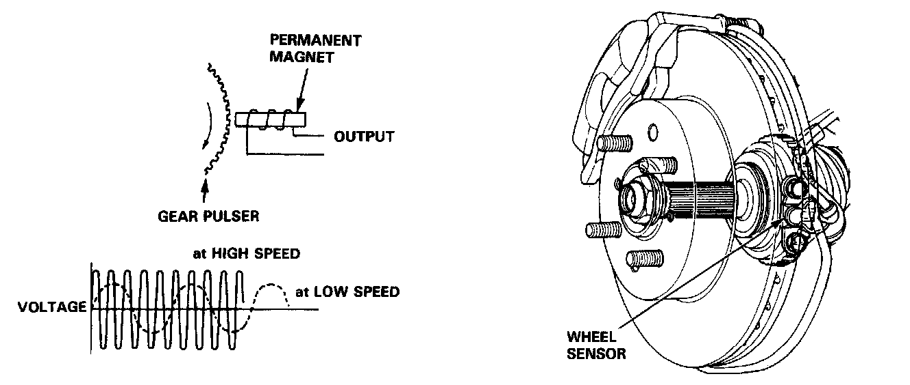

Wheel Speed Sensor: Description and Operation

Wheel Sensor
The wheel sensor is contact less type and it detects the rotating speeds of a wheel. It consists of a permanent magnet and coil. When the gear pulsers attached to the rotatory parts of each wheel (front wheel: outboard joint of the driveshaft, rear: hub bearing unit) turn, the magnetic flux around the coil in the wheel sensor alternates, generating voltages with frequency in proportion to wheel rotating speed. These pulses are sent to the ABS control unit and the ABS control unit identifies the wheel speeds.